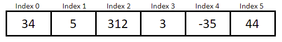

| ARRAYS & ARRAYLISTS |
ARRAYS
Have you ever had to create multiple variables that were of the same data type and served nearly the same purpose? Do you ever wish that you could somehow declare all those variables at the same time instead of doing 50 declaration and initialization statements? Well if you did, then you would be relieved to know of the existence of arrays!
Arrays are a collection of data storage locations, used to store multiple variables of the same data type; primitive (eg. int, double), or non-primitive (eg. String, objects). Each value in an array is referred to as an element, and each value can be accessed using its index. A value's index refers to its position in an array. With Java, the first element of an array is at index 0. An array's length refers to the number of elements in an array. This length cannot be changed after it's been declared; meaning that arrays are not mutable. Arrays can be thought of as something that looks like this:
When declaring an array, it's very similar to a normal variable declaration. You start by writing its data type, but then you also follow it with 2 square brackets (like this: []). Finally, you write the identifier or array name. Your declaration should look something like .
There are 2 ways to initialize an array. First, you could initialize an array by only writing how many elements you want to include. To do this, you would use the new keyword, followed by the data type and the number of elements you want in square brackets. Does this initialization look familiar? You've probably used this when creating objects or other reference data types like Strings. That's because an array is a reference data type.
Your initialization statement should look something like . When you initialize an array like this, all the elements are assigned their default values. For example, if we declared an integer array with 6 elements (), all 6 elements will have the value 0. See below for a chart showing the different data types and their default values.
| Data Type | Default Value |
|---|---|
| int | 0 |
| double | 0.0 |
| boolean | false |
| char | '\u0000' Note: This is basically like an empty char. |
| String/Any Reference Type | null |
The second way to initialize an array is with an initializer list. This is done by assigning all the elements you want in the array with curly braces (like this: {}), while separating each element with a comma. For example, if we were to initialize our arr array from before, we could write . The length of the array is automatically set to the number of elements included. Note that the initializer list can only be used when you first declare the array.
To modify values/elements in an array, you would need to access each individual element using square brackets. You start by calling the array's identifier, followed by square brackets with an element's index in between, and assigning a value of the same data type to it. For instance, if we wanted to change the value at index 0 (the first element in the array) in our previous example array, we would write .
We can also use an array's indices to access each element in an array. Instead of assigning a value to the array, we can simply write which will give us the value at index 0 in the array arr.
If you wanted to access the length of the array, use the array list name followed by . For instance, returns the length of the array. Remember, don't confuse this with ! That's used for Strings, not arrays.
ARRAYLISTS
Arrays are great, but they're kind of stiff. You can't change its length after it has been declared, and they don't have methods despite being a reference type. However, that's where an ArrayList comes in!
The length of an ArrayList is mutable, meaning that its length can chance at any time! Not only that, but their many methods give them their characteristic flexibility which is often why they are used. However, an ArrayList can only be used with object references. In order to use an ArrayList, you must import it by writing either , , or at the top of your program.
The declaration for an ArrayList is almost the same as an array. The only difference is that instead of using square brackets, you use angle brackets (<>). For example, you would write to declare an array list. While it isn't necessary to write the data type, it's much more preferable to include the data type than to not. This is because it's considered an unsafe operation to not include the data type (it's possible to add the wrong data types to the array list accidentally, which would cause errors later on in the program).
To instantiate an ArrayList with no size specified, you could write which creates an ArrayList with size/length of 10 elements. It's very important to remember the two brackets at the end, as it's calling the constructor of the ArrayList class to actually create the ArrayList. If you wanted to add a certain number of elements to an array list, you'd simply write the number of elements in the normal brackets (these ones: ()).
Remember how an ArrayList can only store object references? Well, this doesn't completely mean that we can't store primitive data types. We just need to change their data types slightly. Instead of writing something like , or , we would write their wrapper classes. Wrapper classes, for ArrayList purposes, turn primitive data types into objects. For instance, we would write . Below are the wrapper class names for the most common data types.
| Data Type | Wrapper Class |
|---|---|
| int | Integer |
| double | Double |
| boolean | Boolean |
| char | Character |
Note that Java is case-sensitive! Wrapper classes must start with a capital letter.
Now that we know what an ArrayList is, let's take a look at the methods from the ArrayList class we can use! Below is a table featuring the main ArrayList methods. Note that refers to an example ArrayList. refers to the same data type that the ArrayList is.
| Method | Description |
|---|---|
| arrlist.size() | Returns an int value for the number of elements in the list |
| arrlist.contains(E obj) | Returns true if arraylist contains that object; returns false otherwise |
| Collections.shuffle(arrlist) | Shuffles/randomizes the order of the elements in an arraylist |
| arrlist.indexOf(E obj) | Returns the index of the first occurrence of the object in the arraylist |
| arrlist.isEmpty() | Returns true if the arraylist has no elements; returns false otherwise |
| arrlist.add(E obj) | Appends obj (which MUST be the same data type as the array) to the end of arrlist; returns true NOTE: If there is no space in the array list to add the value, the arraylist automatically doubles its current capacity to include the extra information |
| arrlist.add(int index, E obj) | Inserts obj (which MUST be the same data type as the array) to the position specified at index and shifts every element to right of it 1 space to the right; returns true |
| arrlist.remove(int index) | Removes the element at index in arrlist and moves elements to the right of it to the left by 1 space and reduces arrlist.size() by 1; returns the element formerly at index |
| arrlist.remove(E obj) | Searches for the first occurrence of the specified element and removes it from the list; everything else acts like the previous .remove method |
| arrlist.set(int index, E obj) | Replaces the element at position index with obj; returns the element formerly at index |
| arrlist.get(int index) | Returns the element at position index |
| arrlist.clear(); | Removes all the elements in the arraylist |
| arrlist.addAll(Arrays.asList(arr)) | Appends the array arr to the arraylist; returns true |
| arrlist.toString() | Returns the array list contents as a String in the form of [element1, element2, element3, …] |
Notably, if your method is returning an object that is a wrapper class (eg. Integer), then Java will use a process called auto unboxing which will automatically convert the wrapper class back into a primitive data type. When you're assigning primitive data types into an array list method, the opposite, called autoboxing, occurs. In this process, Java automatically converts the primitive data type into a wrapper class object for you.
So, we've learned about ArrayLists, and how awesome they are. But what about their applications? Well, there are many. They typically are used over arrays when we have large amounts of data or when we have an unknown number of elements. They are also used when we want to use certain functionalities of an ArrayList, such as . For example, take a look at this snippet of code which Nancy Zhu and I (Lily Phan) wrote:
import java.util.*;
public class BridgeGame {
/** Initializes a deck of cards. */
private ArrayList<String> cardDeck= new ArrayList<String>(52);
/** Initializes player 1's hand. */
private ArrayList<String> player1 = new ArrayList<String>(13);
/** Initializes player 2's hand. */
private ArrayList<String> player2 = new ArrayList<String>(13);
/** Initializes player 3's hand. */
private ArrayList<String> player3 = new ArrayList<String>(13);
/** Initializes player 4's hand. */
private ArrayList<String> player4 = new ArrayList<String>(13);
/**
* {@link BridgeGame} constructor.
* Sets the value of {@link #cardDeck}.
*/
public BridgeGame(){
String[] cards = {"AS", "2S", "3S", "4S", "5S", "6S", "7S", "8S", "9S", "TS", "JS", "QS", "KS", "AH", "2H", "3H", "4H", "5H", "6H", "7H", "8H", "9H", "TH", "JH", "QH", "KH", "AD", "2D", "3D", "4D", "5D", "6D", "7D", "8D", "9D", "TD", "JD", "QD", "KD", "AC", "2C", "3C", "4C", "5C", "6C", "7C", "8C", "9C", "TC", "JC", "QC", "KC"};
cardDeck.addAll(Arrays.asList(cards));
}
/** Assigns values from cardDeck to each player's hand. */
public void dealCards(){
Collections.shuffle(cardDeck);
int i = 0;
/**Runs until all the cards have been removed from the deck.*/
while(i < cardDeck.size()){
player1.add(cardDeck.get(0));
cardDeck.remove(0);
player2.add(cardDeck.get(0));
cardDeck.remove(0);
player3.add(cardDeck.get(0));
cardDeck.remove(0);
player4.add(cardDeck.get(0));
cardDeck.remove(0);
i++;
}
}
/** Rest of code not shown. */
The code above is part of a program meant to imitate a single round of the card game Bridge involving 4 players. Part of the problem that need to be solved required us to shuffle a deck of cards and distribute them to 4 players. For this program, it would be most profitable to use ArrayLists to store our data as there are methods such as and which would make this process a lot faster than it would with arrays.
Before we could start shuffling and distributing, we needed to fill the card deck with cards. Thus, Nancy and I used the ArrayList method to add all the cards in the class constructor, where cards is an array with all the possible cards. Doing this is more efficient than writing 52 times to add all the cards into the deck.
Next, we wrote a method called which is intended to shuffle the card deck and distribute the cards. Since we were using arrays, shuffling was very simple. All we needed to do was use to shuffle cardDeck. Shuffling the cards is essential to ensuring that players do not recieve the same cards every round, as the distribution of cards uses the same algorithm each time.
Now the main part of the code snippit; distributing the cards! Notably, this took a lot of trial and error. At first, Nancy and I didn't realize there was a method. Thus, we created 4 for loops for each of the players' hands. Each for loop essentially picked a random index in the cardDeck ArrayList, and assigned the value at that index into a player's hand before removing that value from the original deck. While the logic for this seemed fine, and it did work, the code was rather long. Moreover, we noticed that we were technically just repeating the code over and over again, only changing the ArrayList we were assigning information to. Thus, we tried looking for a shorter algorithm.
At this point, we discovered the , which allowed us to remove all the extra lines of code that found a random index in the cardDeck ArrayList. Hooray! But we still had 4 for loops, all of which were doing the same thing; iterating through 13 elements. Thus, we tried combining the for loops and created 1 for loop which added values from cardDeck into each player's hand while removing values from said ArrayList.
A common mistake with removing elements in a loop, which Nancy and I unfortunately committed, was writing the wrong condition for the for loop. Instead of setting the condition to be something like we wrote , which iterated more times than necessary since the loop was removing elements from cardDeck and therefore reducing its size. If you want to read more in-depth about this issue with removing elements from an ArrayList with a loop, please scroll down to the "Traversing Arrays & ArrayLists" section.
Nancy and I settled with using a while loop to solve this issue. Using a while loop is generally a safer option while removing elements as the condition is checked and updated each time the loop iterates. The only thing with while loops, is that you need to remember to have your loop counter (in our case, ) increment in the while loop or else you will be faced with an infinite loop. We could have solved this with a for loop, which may have enabled us to use less lines, but nonetheless they work the same and using one over the other has little benefit.
TRAVERSING ARRAYS & ARRAYLISTS
To traverse an array or an ArrayList means to access all the elements in it, usually done with either an enhanced for loop (for-each) or a regular for loop. If you want to simply output all the values in a for-each loop, or tally all the points up, then a for-each loop is the way to go. Otherwise, a regular for loop works just fine. See below for an example code of how to traverse an array using a for-each loop. Assume that arrlist has been properly declared and initialized.
for (String output : arrlist){ //loops through every element of the array
System.out.println(output); //outputs each element to console
}
Here's the exact same code but written with a for loop:
for (int i = 0; i < arrlist.length; i++){ //loops through every element of the array
System.out.println(arrlist[i]); //outputs each element to console
}
This is fairly simple for arrays, but what happens when we traverse an ArrayList while removing elements? This becomes complicated, since when we remove items, it also shortens the size of our ArrayList, which makes the ArrayList prone to skipping elements. How does this happen? Well, the ArrayList's size is shorter, but the increment value moves on to the next index without checking the element that replaced the element that was removed, which results in the loop skipping that value. Thus, you can solve this by traversing the array list backwards with a for loop. This way, even when all the values to the right of the removed elements are shifted to the left, it doesn't matter since they've already been checked and the loop can move on to the next element. See below for an example code of how to traverse an arraylist backwards while removing all the strings that start with 'a'. Assume that arrlist has been properly declared and initialized.
for (int i = arrlist.size() - 1; i >= 0; i--){
if (arrlist.get(i).charAt(0) == 'a'){
arrlist.remove(i);
}
}
Remember, we can't use a for-each loop for traversing an array/ArrayList backwards!
BIBLIOGRAPHY
https://docs.oracle.com/javase/tutorial/java/nutsandbolts/arrays.htm
https://www.tutorialspoint.com/why-do-we-need-a-wrapper-class-in-java#:~:text=A%20Wrapper%20class%20is%20a,util%20package.
https://www.w3schools.com/java/java_wrapper_classes.asp
ICS4U0 Course Information, taught by Krasteva V.
AP Classroom Unit 6 Videos
Images were all screenshots taken by Lily Phan (2021).
Code written in partnership by Lily Phan and Nancy Zhu (2021).